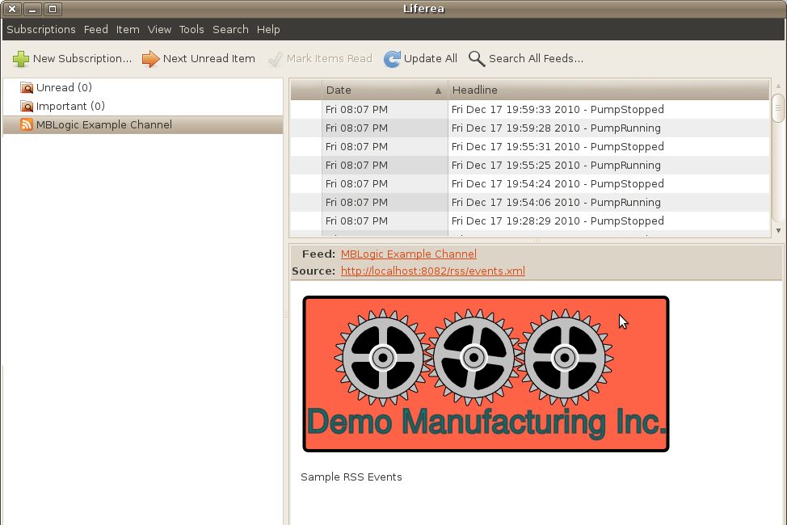

MBLogic
for an open world in automation
MBLogic
for an open world in automation
Help - RSS Feed
Overview
An "RSS Feed" is a means of allowing standard clients to automatically poll a server for information about updated conditions. There are many popular RSS clients available.
The RSS in this system can be used to monitor events. You can configure the RSS server to display selected events as an RSS feed. This allows users to automatically monitor any number of systems without requiring any administration effort.

Addressing
The RSS feed is available via the HMI server (both the standard and the "restricted" versions.
http://localhost:8082/rss/events.xml
Configuration
The RSS feed is configured via a template file called "rsstemplate.xml". The event message texts are stored in a file called "rsseventtexts.js".
rsstemplate.xml
The RSS template file contains the following items:
- taglist - This is a list of the event tags which will be monitored by the RSS system.
- linkfile - This is the file which will be displayed if the user clicks on the link in the RSS message.
- logofile - This is the default logo file which will be displayed if no individual RSS message is selected.
<?xml version="1.0"?> <rss version="2.0"> <channel> <title>MBLogic Example Channel</title> <linkfile>hmidemo.xhtml</linkfile> <taglist>PumpRunning,PumpStopped</taglist> <logofile>pagelogo.png</logofile> <description>Sample RSS Events</description> <image> <title>RSS Demo</title> <url>%(logofile)s</url> </image> %(messages)s </channel> </rss>
rsseventtexts.js
The event texts file contains the text messages which are associated with the event tags. The message format is the same as used for the HMI event texts. However, the content of the text messages used for RSS events do not have to be identical to those used in the HMI.
{
"PumpRunning" : "Tank pump is running.",
"PumpStopped" : "Tank pump is stopped.",
}
The RSS Template
The RSS template must be customised for each application. The template is a simple XML file that can be edited with any plain text editor. The template includes the following elements.
Title
The title is the name which will appear as the name for the RSS feed. Change this to the name you wish to have appear as the title.
<title>MBLogic Example Channel</title>
Description
The description will appear as the default text if an individual message is not selected.
<description>Sample RSS Events</description>
Message
This is a target used by the software to insert the actual RSS messages. Do not remove or alter this.
%(messages)s
Image
A default image or logo can be specified which will be displayed whenever a specific RSS message is not selected. The text between the "title" XML tags is displayed with the image or logo. Enter whatever text is appropriate. The "%(logofile)s" is used as a target for the software to insert the actual link to the file. Do not remove or alter this.
<image> <title>RSS Demo</title> <url>%(logofile)s</url> </image>
Link File
A web page can be specified which will be launched in a web browser whenever the user clicks on a link in the RSS message (this is a feature in typical RSS reader software). For example, the link file could be an HMI page.
Specify only the file name. The system will automatically insert the path, IP address, and port. The link file web page must be located in the HMI directory.
<linkfile>hmidemo.xhtml</linkfile>
Logo File
The logo file is a default image which will be displayed by the RSS reader (if the reader supports that feature). Like the link file, only specify the file name. The system will insert the other information automatically.
<logofile>pagelogo.png</logofile>
Tag List
The tag list is the list of event tags which you wish to monitor via the RSS system. These must be valid event tags, and tag names must be separated by commas.
Specifying the event tag list allows just those events which are the most relevant to an RSS feed to be listed. In most cases it is not useful to include too many events in the RSS feed. Rather, just those events which represent significant changes should be monitored. Overwhelming users with too many events would cause the most significant ones to be lost in the flood of minor ones.
<taglist>PumpRunning,PumpStopped</taglist>
Event Texts File
The event texts file contains the actual messages which are associated with the event tags. These texts may be the same as the ones used in in the HMI web page, but do not have to be. They may be longer, shorter, or differently worded (the users viewing the RSS feed may need a simpler explanation).
The RSS events text file can be copied from the version used in the HMI web age, but with the following differences:
- It only needs to contain the tag names which are actually used in the RSS template file (in the tag list), and text messages associated with them.
- There must be no Javscript variable name used at the start of the file, and no semi-colon closing it. The first character must be a "{", and the last character "}". The data must be in valid JSON format.
{
"PumpRunning" : "Tank pump is running.",
"PumpStopped" : "Tank pump is stopped.",
}
Loading and Changing the RSS Messages
The RSS template and the message texts are automatically loaded when the system starts up. They are also re-loaded whenever the HMI configuration is re-loaded. In other words, to change the RSS messages while the system is running, reload the HMI configuration.
Server Configuration
The RSS message system is part of the HMI server. The same RSS feeds will operate through both the normal and "restricted" HMI servers.
The access path to the RSS feed is the same as would be used to access the equivalent HMI web page except using the path "rss/events.xml" instead of the HMI web page name.
http://localhost:8082/rss/events.xml